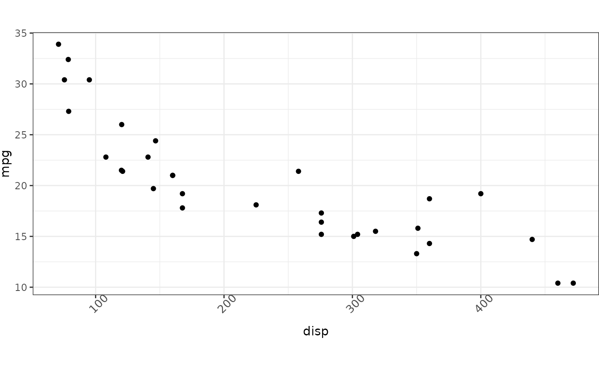
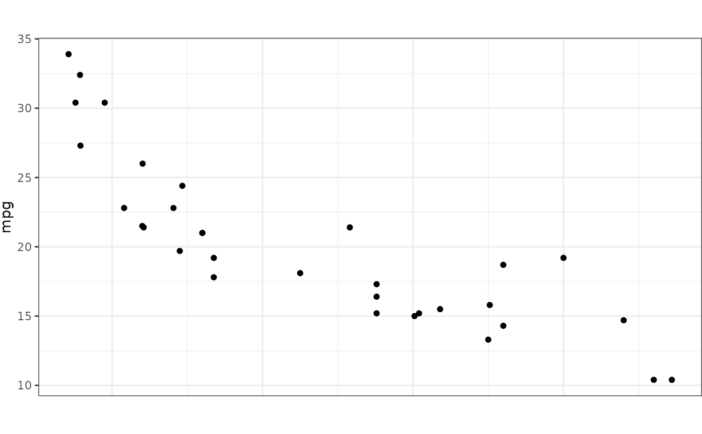

A simple plotting theme building on ggplot2::theme_bw().
Arguments
- x_text_angle
The angle for X-axis labels. Defaults to 45 degrees.
- y_text_angle
The angle for Y-axis labels. Defaults to 0 degrees.
- ...
<
dynamic-dots> Other arguments passed toggplot2::theme(). These will be applied in addition to, or in place of, pre-existing elements defined by this theme. See the examples for this theme's appearance.
Examples
# using an inbuilt dataset
data(mtcars)
# standard theme
ggplot2::ggplot(mtcars, ggplot2::aes(disp, mpg)) +
ggplot2::geom_point() +
theme_vimc()

# with X-axis suppression
ggplot2::ggplot(mtcars, ggplot2::aes(disp, mpg)) +
ggplot2::geom_point() +
theme_vimc_noxaxis()
